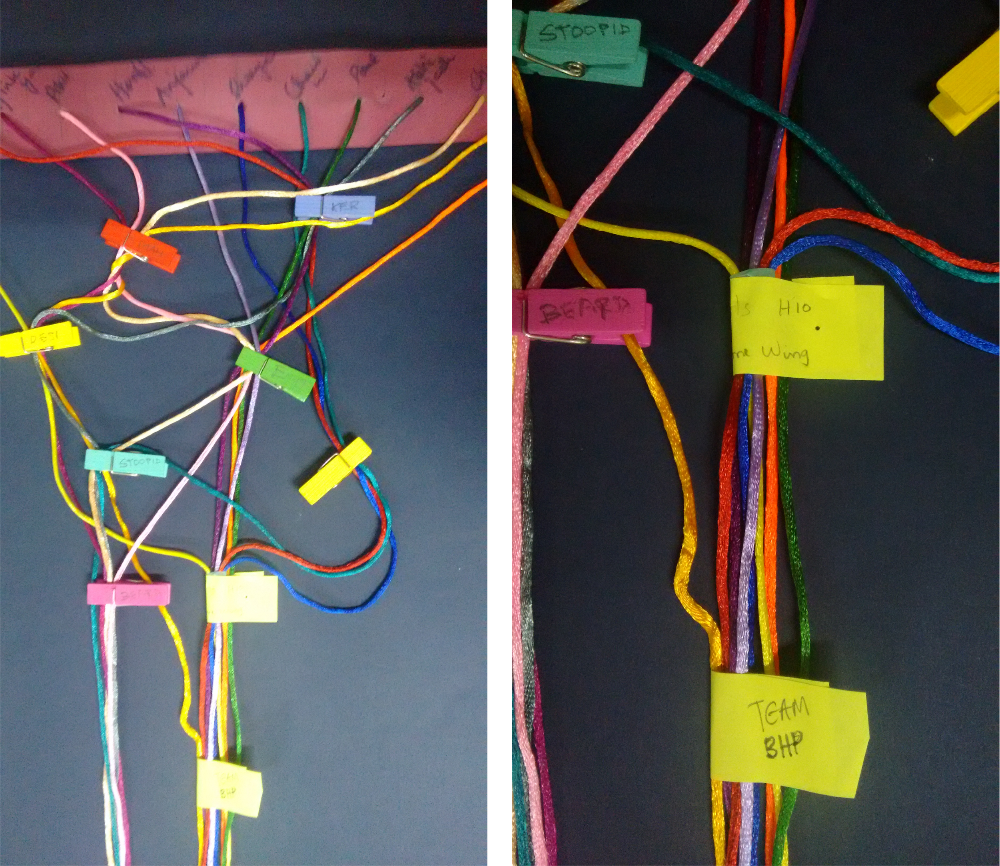

Tangible Data Representation: Connections
Course: Information Design
Course guide: Prof. Venkatesh Rajamanickam
Brief: Select a data set involving the campus of IIT Bombay, and its residents, visualise/represent data in an interesting engaging manner.
Rather than take a static data set from past records, I wanted to work on something participatory. In the class of 13 students in Interaction Design, there were many things that were common between some of us, like languages we spoke, or undergrad education, interests, hobbies, etc.
To represent these complex connections, I set up a board with strings for each of the 13 students. (And little bells at the end of the strings to keep them taut.) I also provided small clips and post-it notes, and invited students to create bunched tags of commonalities they could think of.
There were interesting tags that emerged, like those who sported beards, people whose hometowns were in the same state, hostel residences. It did get a little tangled and messy, which was ok, but looked cleaner with some straightening out.
